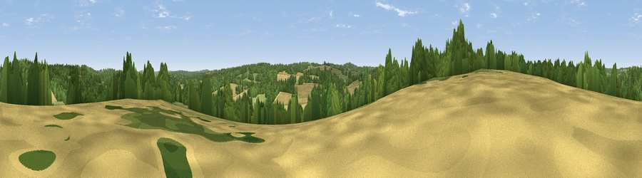

Viewpoint near Hook Green
#39995 in England · top 71% of its area beats it · near Hook GreenThe view, rendered

A 360° render of this exact spot computed from the terrain model, tree cover and land cover — summer colours, afternoon light, calibrated against photographs of famous viewpoints. Real trees, hedges and buildings will differ in detail.
The panorama
Grey silhouette: terrain skyline in each direction (720 bearings, Earth curvature and refraction included). Dashed green: skyline with trees (+15 m) and buildings (+8 m) as obstacles. Blue strip: how far the ground is visible on each bearing.
Where the view opens
Wedge length = distance to the farthest visible ground on that bearing (vegetation-aware). Rings at 10, 25 and 50 km.
What fills the view
48% woodland · 27% cropland · 24% grassland
Angular shares of the visible panorama (visual magnitude), not map area. Landscape diversity 0.46 (0–1 Shannon).
Key numbers
More beautiful places nearby
The staircase of upgrades: each row has a higher view potential than everything closer. Driving times are estimates from straight-line distance, calibrated against real road routing — check an actual route before setting out.
| Place | Direction | Drive | Score |
|---|---|---|---|
| Viewpoint near Woods Green | S · 3 km | ~7 min | 46.3 |
| Viewpoint near Frant | WSW · 4 km | ~10 min | 49.2 |
| Best Beech Hill | SSW · 5 km | ~11 min | 55.6 |
| Viewpoint near Bidborough | NW · 10 km | ~19 min | 57.2 |
| Brightling Obelisk [Brightling Down] | SSE · 15 km | ~27 min | 69.1 |
| Viewpoint near Three Oaks | SE · 30 km | ~48 min | 69.3 |
| Viewpoint near Glynde | SW · 32 km | ~50 min | 70.8 |
| Cliffe Hill | SW · 32 km | ~50 min | 79.3 |
51.10162, 0.33136 · source: screening · position refined by local search. Computed location — check access rights before visiting.